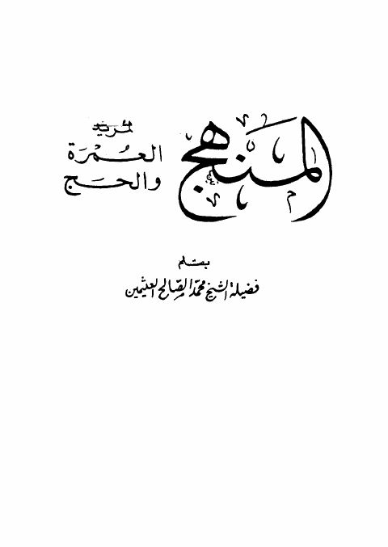

Downloads need an internet connection.
المنهج لمريد العمرة والحج
Authors: محمد بن صالح العثيمين
**▫️ العنوان: المنهج لمريد العمرة والحج** ▪️ المؤلف: #محمد_بن_صالح_العثيمين ▫️ عدد الأجزاء: 1 ▪️ الصفحات: 64 ▫️ نوع الوعاء: #كتاب ▪️ التصنيف الرئيسي: #العلماء_والمفكرون ۪